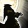

SPÉCIALISATION RESTAURATION
SPÉCIALISATION RESTAURATION Le Druide est une classe Polyvalente qui bénéficie de plusieurs forme animal pour combattre et qui peut être à la fois lanceur de sort, soigneur et attaquant au corps à corps. La particularité de la spécialité Restauration réside dans ses soins avec les sorts. Ce sont pour la majorité des soins sur la durée. Il fait aussi des dégâts avec des sorts de type Nature et Arcanes. Ses soins sont efficace en monocible, mais pas en multicible.
C'est une classe complexe nécessitant de l’anticipation dans la gestion de ses formes et de ses soins sur la durée.
En PvP c'est une spécialisation moyennement dure à jouer, car cette classe a beaucoup de survie, quelques controles et du dps et heal sur la durée.
Elle est très utile en bg, très viable pour de la 2c2 en arène, et adaptée pour de la 3c3 ou 5c5.
 LES SORTS LES PLUS UTILISÉS
LES SORTS LES PLUS UTILISÉS
De dégâts
 Éclat lunaire
Éclat lunaire Essaim d'insecte (Suivant votre spé)
Essaim d'insecte (Suivant votre spé) Colère
Colère Feu stellaire
Feu stellaire Ouragan
Ouragan Griffure (Forme de félin, même chose qu'au dessus)
Griffure (Forme de félin, même chose qu'au dessus)De soutiens
 Fleur de vie
Fleur de vie Récupération
Récupération Rétablissement
Rétablissement Cyclone (votre meilleur ami) Toucher guérrisseur
Cyclone (votre meilleur ami) Toucher guérrisseur Lucioles (utile pour empêcher un voleur ou druide de se camoufler, et réduire l'armure d'un ennemi)
Lucioles (utile pour empêcher un voleur ou druide de se camoufler, et réduire l'armure d'un ennemi) Innervation (le meilleur ami quand on est sans mana en plein combat)
Innervation (le meilleur ami quand on est sans mana en plein combat) Abolir le poison (Enlever un sort de type poison)
Abolir le poison (Enlever un sort de type poison) Délivrance de la malédiction (Enlever un sort de type malédiction)
Délivrance de la malédiction (Enlever un sort de type malédiction) Sarments (contre les corps à corps)
Sarments (contre les corps à corps) Hibernation (contre les pets des chasseurs ou les autres druides en forme animal)
Hibernation (contre les pets des chasseurs ou les autres druides en forme animal) Emprise de la nature
Emprise de la nature Forme de félin (Pour se camoufler)
Forme de félin (Pour se camoufler) Forme de voyage (Utile pour fuir :p)
Forme de voyage (Utile pour fuir :p) Forme de vol
Forme de vol Forme aquatique (utile dans l'eau)
Forme aquatique (utile dans l'eau) Traquenard (Forme de félin, utile pour open)
Traquenard (Forme de félin, utile pour open) Célérité (Forme de félin, excellent moyen de fuir, améliore la vitesse de course de 70%)
Célérité (Forme de félin, excellent moyen de fuir, améliore la vitesse de course de 70%) Camouflage (Forme de félin, utile pour se cacher)
Camouflage (Forme de félin, utile pour se cacher) Sonner (Forme d'ours, utile pour calmer un combat ou pour s'enfuir)
Sonner (Forme d'ours, utile pour calmer un combat ou pour s'enfuir) Charge farouche (Suivant votre spé, Forme d'ours, spé charge farouche, très utile pour immobiliser quelqu'un ou pour décast)
Charge farouche (Suivant votre spé, Forme d'ours, spé charge farouche, très utile pour immobiliser quelqu'un ou pour décast) Enrager (Forme d'ours, Génère de la rage, à associer avec Régénération frénétique)
Enrager (Forme d'ours, Génère de la rage, à associer avec Régénération frénétique) Régénération frénétique (Forme d'ours, Convertit de la rage en points de vie)
Régénération frénétique (Forme d'ours, Convertit de la rage en points de vie) Marque du fauve
Marque du fauve Renaissance (Rez un ami, utile qu'en pvp sauvage)
Renaissance (Rez un ami, utile qu'en pvp sauvage)
 Les caps et stats
Les caps et statsRappel : Un cap par définition c'est la valeur à partir de laquelle vous n'avez plus aucun intérêt à monter une statistique.
Expliquées par ordre de priorité :
Le Bonus aux Soins
C'est une stat importante qui va monter vos sorts de soins. Cette stat n'a pas vraiment de cap. Vous allez la monter à la fois avec le stuff, les enchantements et les gemmes. Vous pouvez aussi ajouter un bijoux qui monte votre bonus aux soins.
Avec 1200 de bonus aux soins vous commencerez à être un vrai "heal". Avec 1600 de bonus aux soins vous commencerez à être bien. Ensuite avec le stuff vous ne monterez pas plus de 2100 de Bonus aux soins, si vous pouvez faire mieux, tant mieux !
L'intelligence
Une stat de base super utile si vous avez la spé power heal ou DS, avec  soutien lunaire qui augmente vos dégâts et soins des sorts d'un montant total de votre intelligence et Etat de rêve qui augmente votre regen mana d'un montant aussi de votre intelligence. Sinon pour les autres spé C'est la stat que vous monter avec votre stuff et gemmes (enchantement est un choix pas forcement obligatoire).
Vous pouvez monter jusqu'à 11k mana max, ce qui va vous permettre déjà d'être à l'aise, mais 10K suffisent.
L'esprit
Stat utile pour les autres spé que la spé power heal et DS, c'est ce qui fera votre survie en terme de mana sur le long terme. Ce n'est pas une stat à prioriser par contre, car si vous êtes sans mana, il vous suffit de regen en hors combat. Si vous êtes en combat et sans mana, il y a l' Innervation.
C'est donc une stat à up avec le stuff, et quelques gemmes si vous ne montez pas l'intelligence.
La résilience
Cette stat est importante en PvP. Elle diminue les dégâts des sources de dégâts périodiques (DOT) et les chances de recevoir un coup critique. Diminue aussi les effets des drains de mana et les dégâts des coups critiques.
Pour faire simple le cap de la résilience est de 492.5, au dessus de 500, la résilience ne diminue plus les chances de recevoir un coup critique (diminué de 25% au max). Mais il n'y a pas de cap résilience pour la diminution des dégâts des DOT.
Il vous faudra 400 de résilience minimum pour déjà commencer à bien encaisser (L'idole heal PvP peut être d'une grande aide). Vous pouvez mixer avec le stuff Equilibre (2 pièces, épaules et jambes sont le plus rentable) pour avoir le bonus du set (+35 résilience) et ainsi gagner légèrement en dps.
Rappelons que le Druideheal en PvP, est là pour être agressif au decast en forme d'ours, controle (voir dps) etc... pas simplement pour heal donc ce petit bonus de dégâts des sorts en plus ainsi que 35 resilience en plus peuvent être utile.
L'endurance
C'est la Stat de la survivabilité, assez importante en PvP. à monter en second plan à la fois avec le stuff mais aussi avec quelques enchantements. Niveau gemmes vous pouvez en mettre, si vous avez assez à votre gout de Intel / Esprit
Il ne faut pas non plus trop la monter, à partir de 10k PV, vous en aurez assez. Vous pouvez monter au max à 11K.
Le critique des sorts
C'est la stat qui n'est pas rentable pour un druide, car vos heals sont majoritairement sur la durée, donc pas prit en compte par le critiques des sorts, ce qui le rend useless. Inutile donc de gemmer / enchant critiques des sorts pour un druide heal. Sachant qu'en plus vous gagnez en critique déjà avec l'intelligence.
Le score de hate des sorts
C'est ce qui vous réduit le temps d'incantation des sorts
Cette stat est utile au bout de 200 au score de hate, en dessous, cette stat est inutile. Si vous avez un stuff full PvP, atteindre ce score est carrément impossible, même en étant full gemmé et enchant hate. (vous atteindrez environ 140 au score de hate des sorts max)
Il vous faut pour le coup du stuff PvE obligatoirement pour arriver à avoir ce score de hate. Il n'y à pas vraiment de cap en heal.
Ici ce n'est pas notre objectif, car on a besoin de résilience pour pouvoir encaisser, donc cette stat si vous pouvez en avoir ne dites pas non, sans trop changer la valeur des autres caractéristiques. Inutile donc de gemmer et / ou enchant hate des sorts, car vous sacrifierez d'autres stat plus importante.
Sachant qu'en plus vos heals et vos sorts sont quasi tous instantanée et sur la durée, ça nous vous servirait à rien... La hate c'est bien, mais ça bouffe la mana à une vitesse affolante, donc gardez bien à l'esprit qu'il faut bien équilibrer cette stat avec d'autres, en particulier l'intelligence ou l'esprit.
La pénétration des sorts
Cette stat ci comparé au toucher des sorts, évite les résistes adverse. C'est à dire que plus vous avec du score de pénétration, moins l'ennemi va "résister" à vos sorts.
Peu de joueurs ont une grosse résistance à la nature, inutile donc de trop monter cette stat. Il y a l'enchant sur cape de 20 pénétration qui suffit à vos besoins.
Autant dire que cela suffit, car il n'y a pas de "cap" à proprement dit. Inutile donc de gemmer pénétration des sorts.
Le toucher des sorts
Tout d'abord il faut comprendre que le toucher des sorts vous permet d'éviter "les ratés" quand vous lancer un sort (à ne pas confondre avec la pénétration des sorts).
En PvP contre une cible de même niveau vous devrez "théoriquement" avoir 4% de toucher des sorts. Mais le cap est néanmoins de 3%, car il y a 1% "incompressible", c'est à dire pas nullifiable via spellhit/talent/buff/etc... En heal vous êtes amené à dps peu, donc le score de toucher n'est qu'une stat optionnelle, et il ne vous est pas obligé de devoir la up.
 L'arbre de talent
L'arbre de talentAvant de commencer vous pouvez voir les talents druide sur ce site
Les points importants dans la spé Restauration sont :
Colère stellaire Emprise de la nature Contrôle de la Nature Changeforme naturel
Changeforme naturel Intensité Récupération améliorée
Intensité Récupération améliorée Rapidité de la nature
Rapidité de la natureSpé heal
Impact brutal Charge farouche Rétablissement amélioréSpé DS
Éclat lunaire amélioré Essaim d'insectes Focalisation célesteVous pouvez cliquer sur les images pour les agrandir.
Restau + Essaim d'insectes + Allonge de la nature
2.png)
Restau + Essaim d'insectes (portée courte)
2.png)
Restau + Arbre de vie
2.png)
Power heal

DreamState + Sélénien
2.png)
DreamState variante dps (sans Sélénien)
DreamState inversé

 Les gemmes
Les gemmesPour ce qui est des enchants et gemmes, en gros il vous faut du Bonus aux soins, de l'esprit / intelligence, de l'endurance et de la résilience ! Car je le rappel encore, vous faites des soins sur la durée.
 Diamant tonneterre de puissance : +18 Endurance et 5% de résistance aux étourdissements
Diamant tonneterre de puissance : +18 Endurance et 5% de résistance aux étourdissements
Il vous faut 3 gemmes bleues pour pouvoir l'activer
 +11 aux soins, +4 dégâts des sorts, +4 Intelligence, ou
+11 aux soins, +4 dégâts des sorts, +4 Intelligence, ou  +11 aux soins, +4 dégâts des sorts, +5 Intelligence
+11 aux soins, +4 dégâts des sorts, +5 Intelligence +11 aux soins, +4 dégâts des sorts, +6 Endurance, ou
+11 aux soins, +4 dégâts des sorts, +6 Endurance, ou  +11 aux soins, +4 dégâts des sorts, +5 Esprit (si vous préférez de la regen mana) x3
+11 aux soins, +4 dégâts des sorts, +5 Esprit (si vous préférez de la regen mana) x3 +18 aux soins et +6 aux dégâts des sorts, ou
+18 aux soins et +6 aux dégâts des sorts, ou  +22 aux soins et +8 aux dégâts des sorts
+22 aux soins et +8 aux dégâts des sorts Diamant tonneterre de perspicacité : +12 Intelligence et une chance de restaurer des points de mana au lancement d'un sort (+300 mana)
Il vous faut 2 gemmes rouges, 2 gemmes jaunes et 2 gemmes bleues pour l'activer
+11 aux soins, +4 dégâts des sorts, +4 Intelligence, ou +11 aux soins, +4 dégâts des sorts, +5 Intelligence +11 aux soins, +4 dégâts des sorts, +6 Endurance, ou +11 aux soins, +4 dégâts des sorts, +5 Esprit (si vous préférez de la regen mana) x2 +18 aux soins et +6 aux dégâts des sorts, ou +22 aux soins et +8 aux dégâts des sorts Les enchantements
Les enchantementsPar ordre de priorité
Casque
Arcanum du gladiateur (+18 Endurance et +20 au score de résilience) Réputation Opération Soleil brisé Amical.
Arcanum du renouveau (+35 aux soins, +12 dégâts des sorts, +7 points de mana toutes les 5 sec.) Réputation Thrallmar / Bastion de l'honneur Révéré.
Epaules
Calligraphie superieures de discipline (+33 aux soins, +11 dégâts des sorts, +4 points de mana toutes les 5 sec.) Exalté Aldor
Calligraphie supérieure de l'orbe (+22 aux soins, +6 points de mana toutes les 5 sec.) Exalté Clairvoyant
Calligraphie de discipline (+29 aux soins, +10 dégâts des sorts) Honoré Aldor
Calligraphie de l'orbe ou de l'oracle (+13 score de critique des sorts ou +5 points de mana toutes les 5sec.) Honoré Clairvoyant
Torse
Résilience majeur (+15 Résilience)
Pts vie exceptionnels (+150 point de vie)
Carac. exceptionnelles (+6 à toutes les caractèristiques)
Brassards
Soins excellents (+30 aux soins, +10 dégâts des sorts)
Robustesse (+12 Endurance)
ou à la limite Intelligence majeure (+ 12 Intelligence)
Cape
Pénétration des sorts (+20 Pénétration des sorts)
Armure majeure (+120 Armure)
ou à la limite Résistance majeure (+7 à toutes les résistances)
Jambes
Craft par un Couturier
Fil ensorcelé doré (+66 aux soins, +22 dégâts des sorts, +20 Endurance)
Fil ensorcelé argenté (+46 aux soins, +16 dégâts des sorts, +15 Endurance)
Gants
Soins majeure (+35 aux soins, +12 dégâts des sorts)
Pieds
Vitesse du sanglier (+9 Endurance et augmentation de la vitesse de course)
Robustesse (+12 Endurance)
Bagues
Si vous avez enchantement
Pouvoir de guérison (+20 aux soins, +7 dégâts des sorts)
Arme
Soins majeure (+81 aux soins, +27 dégâts des sorts), le must have pour tous healer.
Légende :
[Button:1] = bouton gauche de la souris
[button:2] = bouton droit de la souris
[nomod] = bouton par défaut du clavier
[mod:alt] = alt + le bouton par défaut
[mod:shift] = shift + le bouton par défaut
[mod:ctrl] = controle + le bouton par défaut
Ces macros sont adapté pour quelqu'un qui joue à la souris, mais vous pouvez les adapter à votre sauce par exemple :
Avec Eclat lunaire, version à la souris
Bouton gauche Eclat lunaire rang max, bouton droit Eclat lunaire rang 1.
Version bind clavier :
[Touche par défaut] Eclat lunaire rang max, Alt+[touche par défaut] Eclat lunaire rang 1.
Pour un raccourci clavier il faut indiquer [nomod] pour la touche par défaut, et vous pouvez remplacer alt pour autre chose sur la deuxième ligne.
Notez aussi que si vous ne mettez aucun rang de sort, le rang maximum sera utilisé.
Ours et félin
Bouton gauche lance la forme d'ours, si vous rappuyez une nouvelle fois sur le bouton gauche lance charge farouche sans vous démorph. Bouton de droite lance la forme de félin, si vous rappuyez de nouveau, lance camouflage, si vous rappuyez encore cela vous décamoufle.
Cyclone
Bouton gauche cyclone sur votre cible normal, bouton droit cible le focus et lui envoie un cyclone, puis recible votre ancienne cible. Sur les deux boutons, vous dites en /gr (groupe) le nom de la cible à qui vous envoyez le cyclone.
Rapidité de la nature
Bouton de gauche lance rétablissement, si vous appuyez sur alt, le sort est lancé sur vous, même si vous avez une cible. Bouton de droite lance rapidité de la nature et touché guérisseur. Les deux boutons vous équipe vos armes et idoles heal.
Ecorce
Pour lancer un Ecorce et Ouragan en même temps pour éviter de perdre quelques ticks sur l'Ouragan. Vous pouvez faire la même chose avec Tranquillité
Innervation
Vous équipe votre arme avec beaucoup d'esprit en plus d'utiliser Innervation.
Eclat lunaire
Bouton gauche Eclat lunaire rang max, bouton de droite cible le premier Totem chaman en face de vous et lance Eclat lunaire rang 1, puis vous remet en cible votre ancienne cible. Les deux boutons vous équipe vos armes et idoles dps.
Colère
Vous équipe vos armes dps et l'idole qui augmente les dégâts de Colère, et vous lancez un sort Colère rang max.
Feu stellaire
Vous équipe vos armes dps et l'idole qui augmente les dégâts de Feu stellaire, et vous lancez un sort Feu stellaire rang max.
Demorph remorph
Macro demorph remorph éclair (marche avec tous les morph)
Macro anti-rogue/feral
Vous pouvez la spammer dès que vous voyez un fufu en camouflage, la macro va vous permettre de cibler le premier ennemi et de lui appliquer un Eclat lunaire


 Haut de page
Haut de page{kind=link}